★★★★★
“Un trato cercano, profesores muy atentos y un ambiente genial para aprender. Nuestro hijo va encantado a clase.”
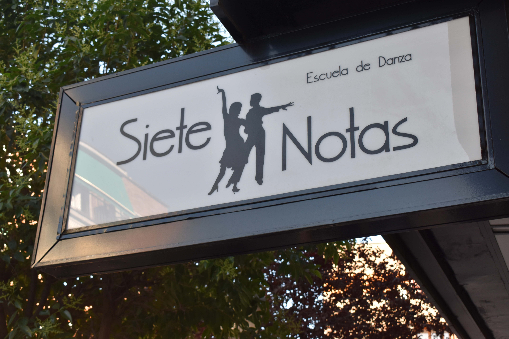
En Siete Notas disfrutamos enseñando danza, música y actividades para todas las edades, con clases dinámicas, atención cercana y un ambiente ideal para aprender, expresarte y pasarlo bien.
Ver actividades↓Siete Notas es una escuela de danza, música y actividades situada en Leganés donde niños, jóvenes y adultos pueden desarrollar su talento en un ambiente cercano, creativo y profesional.
Ofrecemos clases de danza urbana, flamenco, música, actividades senior, gym y otras propuestas enfocadas al bienestar, el aprendizaje y la diversión.
Descubrir actividades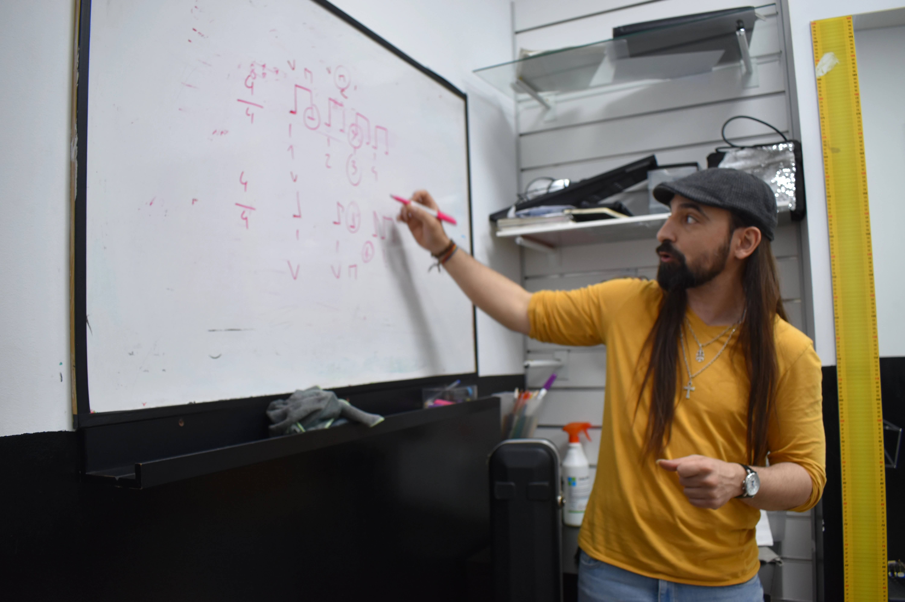
Descubre todas las disciplinas que puedes practicar en Siete Notas. Música, danza, actividades senior, fitness y mucho más.
Siete Notas es un espacio divertido y motivador. Nuestro objetivo es ayudarte a descubrir nuevas habilidades, disfrutar del proceso y sentirte parte de algo especial.
Seas niño, joven o adulto, tenemos una actividad pensada para ti. Descubre cuál encaja mejor con tus intereses.
Danza Urbana, Flamenco, Danza Española y Sevillanas.
Descubrir →Piano, guitarra, batería, canto y mucho más.
Descubrir →Pilates, Zumba y actividades enfocadas al bienestar.
Descubrir →Actividades Senior adaptadas a diferentes niveles.
Descubrir →La confianza de nuestros alumnos y familias es una de las partes más importantes de la escuela.
“Un trato cercano, profesores muy atentos y un ambiente genial para aprender. Nuestro hijo va encantado a clase.”
“Empecé desde cero y me he sentido acompañada desde el primer día. Las clases son dinámicas y muy motivadoras.”
“Las clases son muy agradables, adaptadas y divertidas. Es un espacio perfecto para moverse y sentirse bien.”
Consejos para elegir clases de danza, música y actividades de bienestar en Leganés. Contenido pensado para familias, alumnos y personas que quieren empezar una actividad con seguridad.
Qué mirar antes de apuntar a tu hijo o hija a una escuela de danza: grupos, ambiente, método y acompañamiento.
Leer artículo →Ideas para elegir instrumento y empezar música con una progresión cómoda, motivadora y adaptada al alumno.
Leer artículo →Movimiento, coordinación y bienestar en clases cercanas para personas que quieren mantenerse activas.
Leer artículo →Nos encontramos en una ubicación cómoda y accesible en Leganés, donde desarrollamos todas nuestras actividades de danza, música, senior, gym y formación artística.
Dirección
C. Torrubia, 4
28911 Leganés, Madrid
Teléfono
918 28 19 88
Hemos añadido nuevas fotografías reales para mostrar mejor el ambiente de la escuela: clases de danza urbana, música, flamenco, actividades gym, eventos y espacios interiores. La idea es que quien visite la web pueda imaginar cómo se vive una clase antes de pedir información.
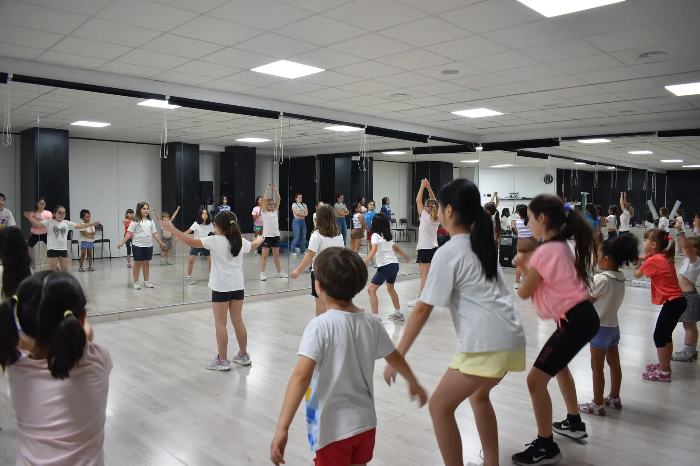
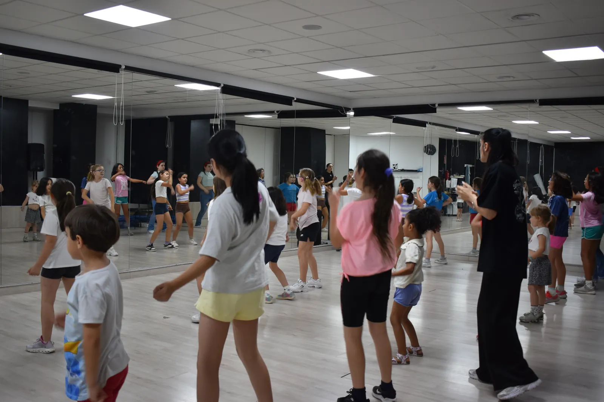
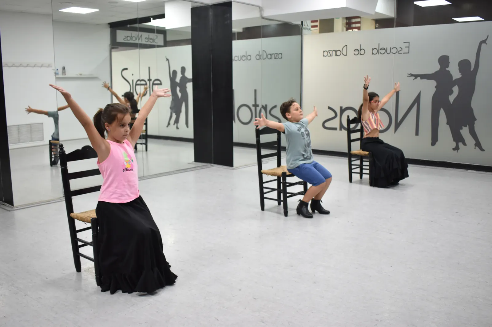
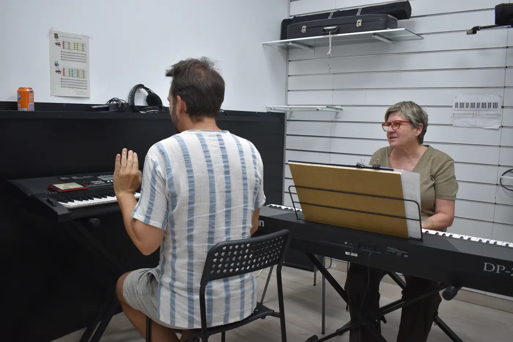
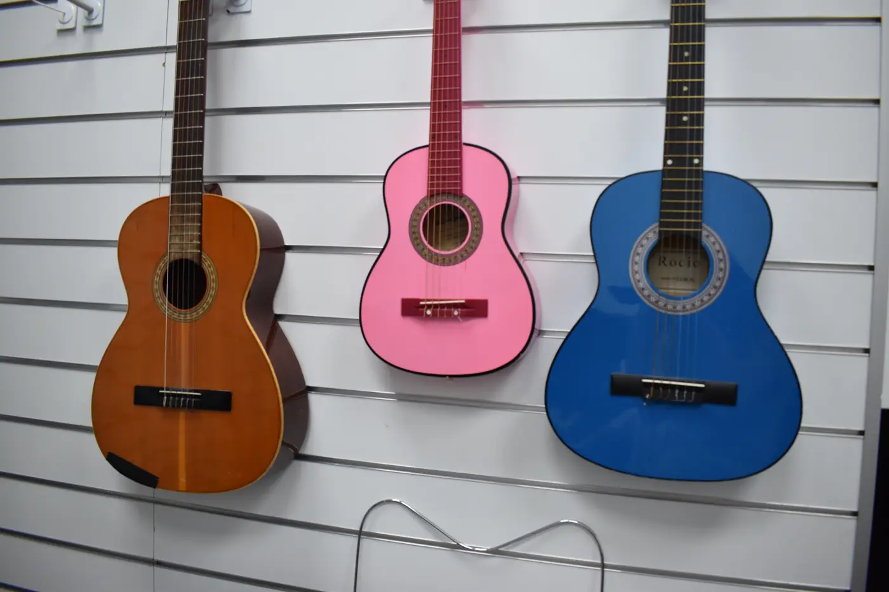
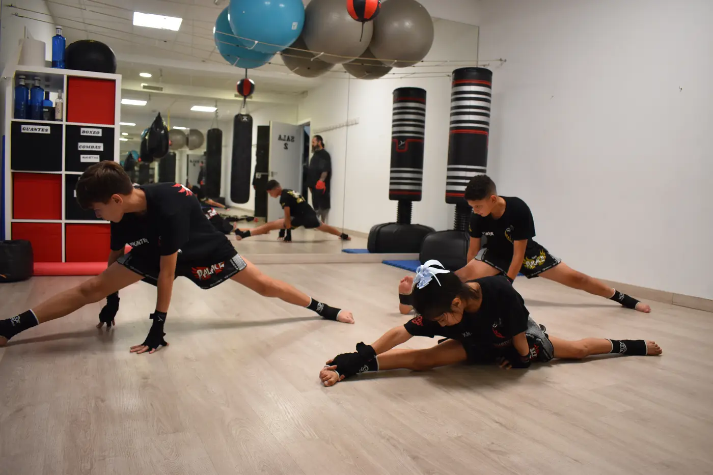
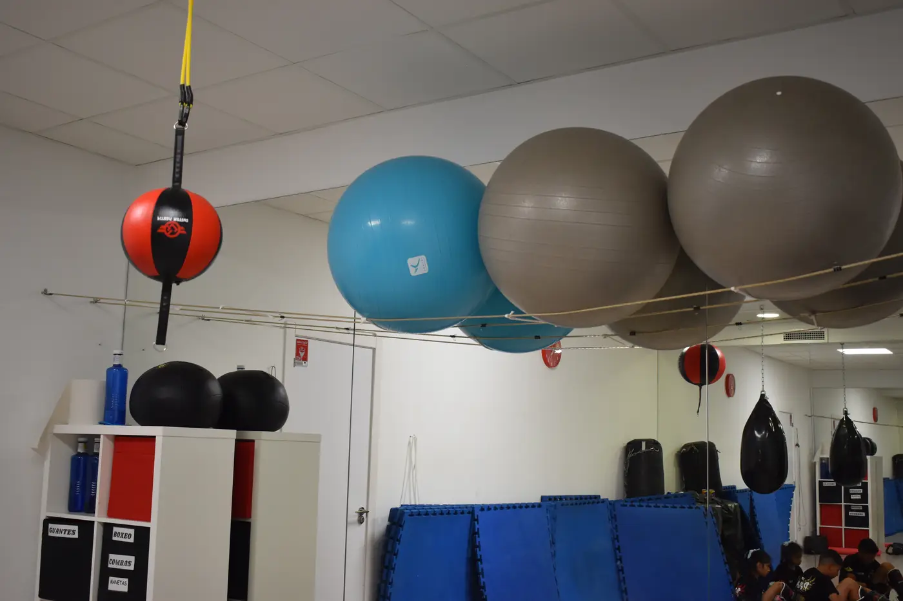
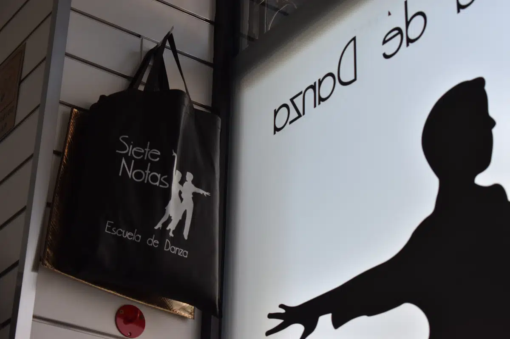
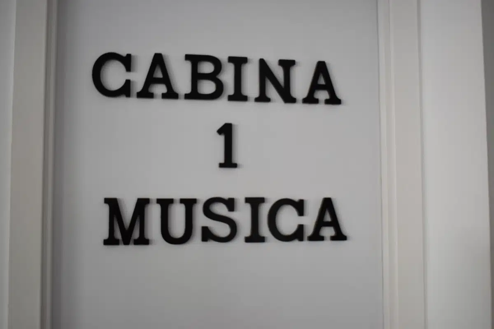
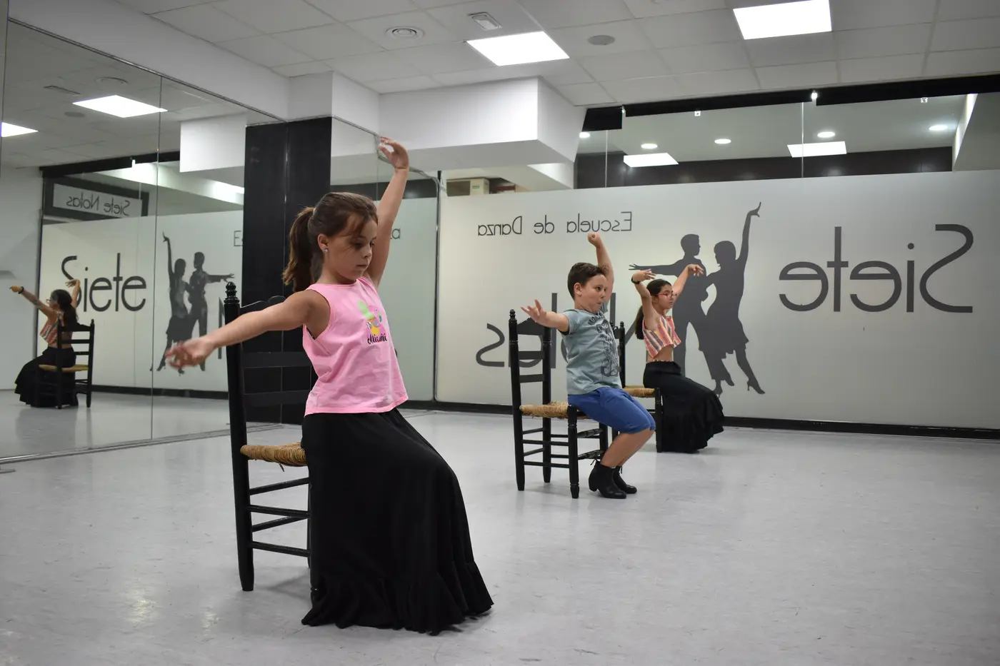
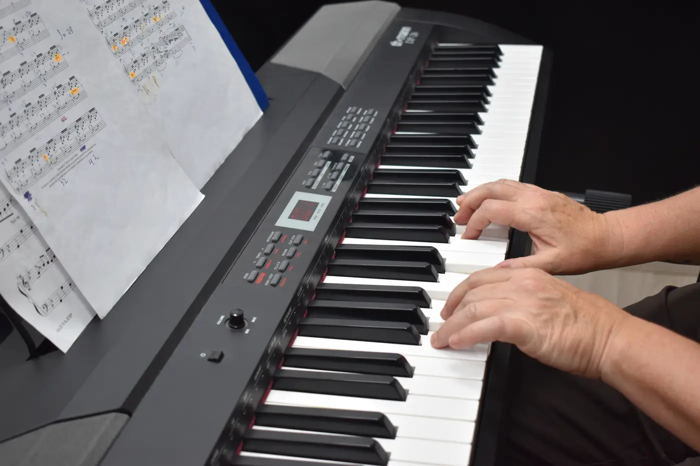
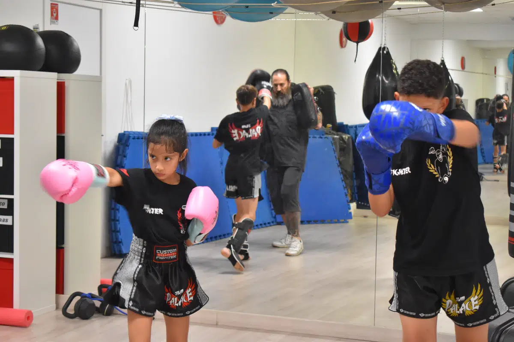
Tanto si quieres aprender desde cero como perfeccionar tus habilidades, en Siete Notas encontrarás un espacio donde crecer, disfrutar y compartir tu pasión.